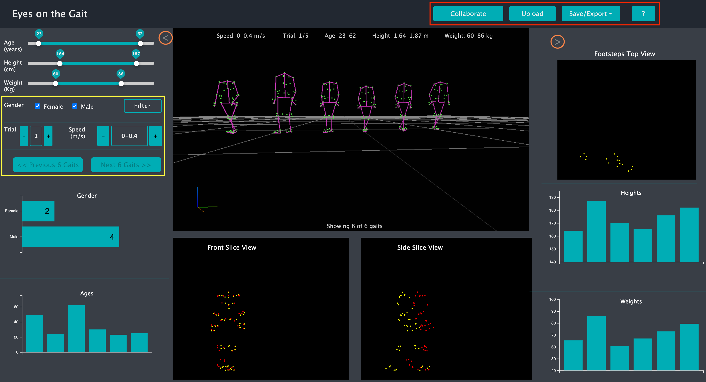

Instructions
This page briefly decribes how to use the visualization tool. Looking at the screenshot below, there are four page areas:
- Starting with the main 3D viewing area, situated right in the middle of the page, the visualization starts by
showing the gaits of six participants, selected from a larger dataset of participants. Users can interact with the
scene by rotating it, panning and zooming in/out.
- At both the left and right sides of the main 3D viewing area you can see the side view collapsing buttons, as
highlighted in the screenshot below. They allow the user to expand the 3D viewing
area as well as resetting it back to the original view.
- The left side the page contains the filtering tools, as highlighted in the
screenshot below. They allow controlling the participants subset viewed by selecting the trial, the speed and a different
set of participants. Filtering can also be done by gender, age, height and weight. The filtering tools will update the
distribution plots located both at the bottom left and right sides of the page.
- The the collaboration tools on the top navigation bar, as highlighted in the
screenshot below, contains a Collaboration button that allows creating of a url that can be then shared with another user
which will be able to see the shared screen. The Save/Export button will allow saving of the main 3D viewing area as an
image, as well as saving of the current participant dataset in CSV/JSON formats. Finally, the Upload button can be used
to import participant datasets from outside.
There is also a 3-min video
going over the features described on this page. Hopefully, you will find the tool interesting and useful!
